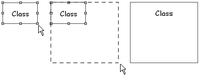

Changing an element’s size in a diagram¶
Re-sizing an element¶
To change the size of an element in a diagram, simply select one of the control points surrounding the element and drag it to the required size.

Re-sizing a class¶
The “Fit to content” command¶
The  ‘Fit to content’ command in the diagram edition view toolbar and in the ‘Layout’ contextual menu on a diagram element is used to adjust the size of the selected element to the size of its properties: name, attributes, operations, elements contained inside it, and so on.
‘Fit to content’ command in the diagram edition view toolbar and in the ‘Layout’ contextual menu on a diagram element is used to adjust the size of the selected element to the size of its properties: name, attributes, operations, elements contained inside it, and so on.